1. Flyers con Corteza en la Ciudad
Intervención urbana en Plaza Rocha, Plaza San Martín y Plaza Italia. Afiches con corteza real de árbol y un mapa críptico bajo el llamado "Connexus te necesita".
La empatía dejó de ser un concepto abstracto.
Taller de Diseño Multisensoriales y Taller de Diseño de Experiencias Transmedia — Facultad de Artes, UNLP (2026)
Descubrir el ecosistemaLas coordenadas geográficas son exactamente las mismas de nuestro planeta Tierra, pero en el año 3000. Connexus propone un mundo donde el aislamiento y el individualismo contemporáneo colapsaron para dar paso a la evolución definitiva de la conexión humana: la empatía somática.
En este paradigma, las personas desarrollaron la capacidad biológica de sentir, compartir y transmitir emociones complejas a través del tacto. La superficialidad desapareció y la belleza se mide por la historia afectiva: los Códices tatuados en la piel que inmortalizan cada emoción profunda vivida.
"La supervivencia de la sociedad ya no depende de acumular recursos, sino de abandonar el individualismo y conectarnos físicamente a través de nuestras emociones compartidas. El ecosistema inteligente nos brinda sustento a cambio de una ofrenda cruda: nuestra energía emocional."
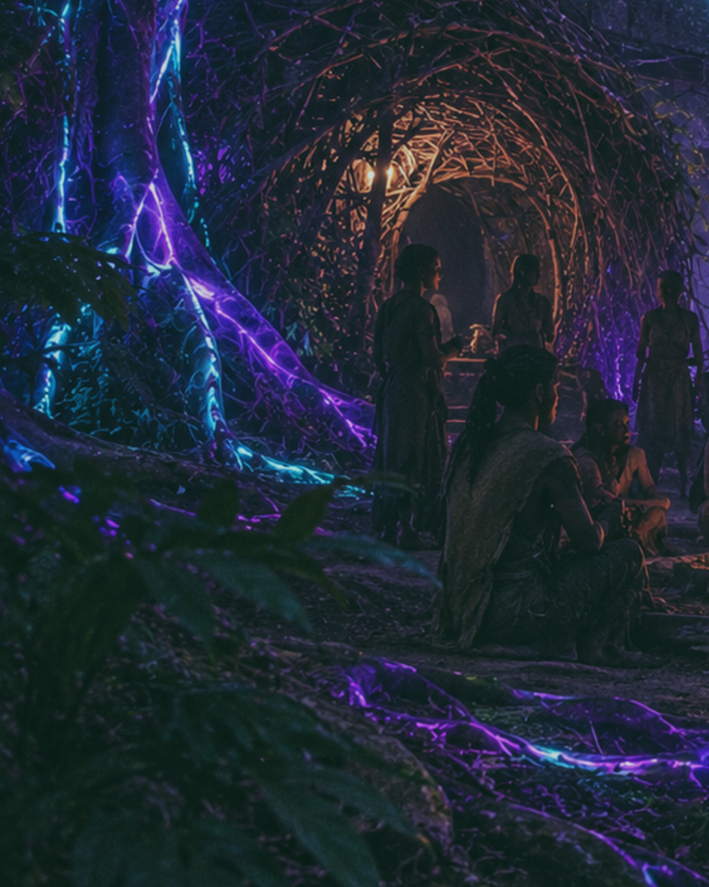
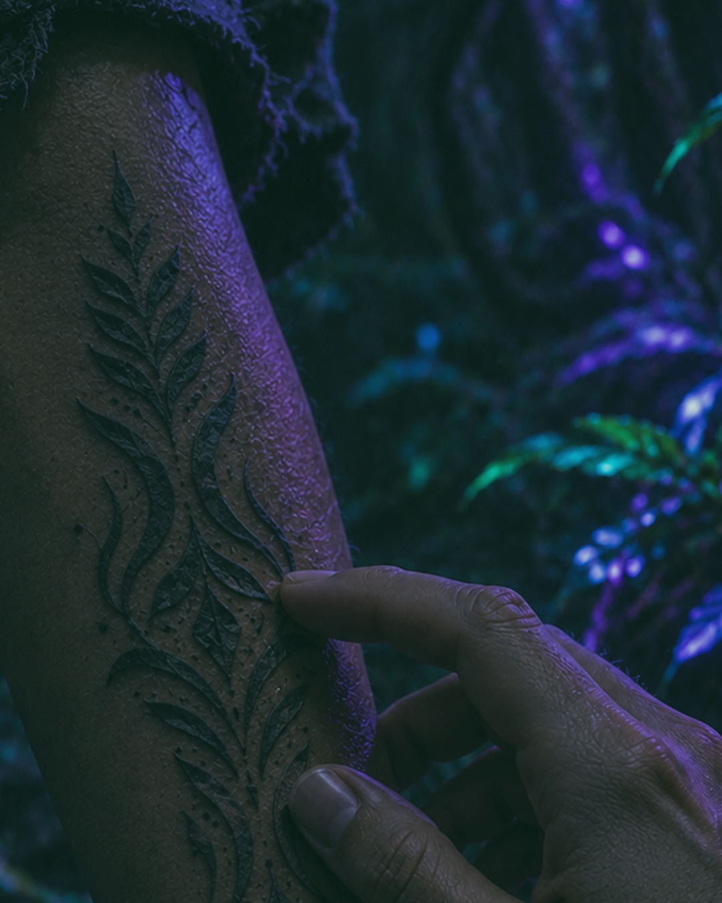
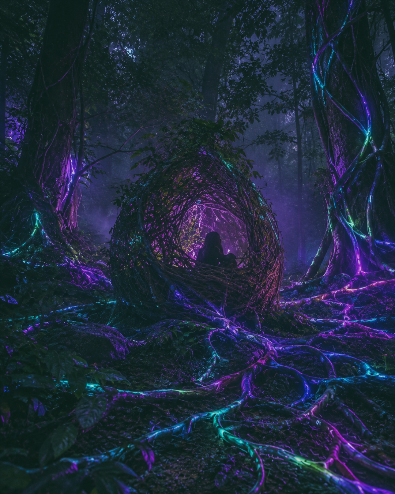
Nuestro lenguaje visual se basa en formas cóncavas, orgánicas e irregulares sin líneas rectas perfectas, articulado a partir de los tres colores centrales de la identidad de Connexus.
Exploramos los cinco sentidos para construir la materialidad del universo Connexus y hacer que la empatía somática se sienta en el cuerpo.

Uvas azucaradas congeladas y limonada: sabores puros de la tierra intervenidos para generar extrañamiento térmico y de texturas durante los rituales.
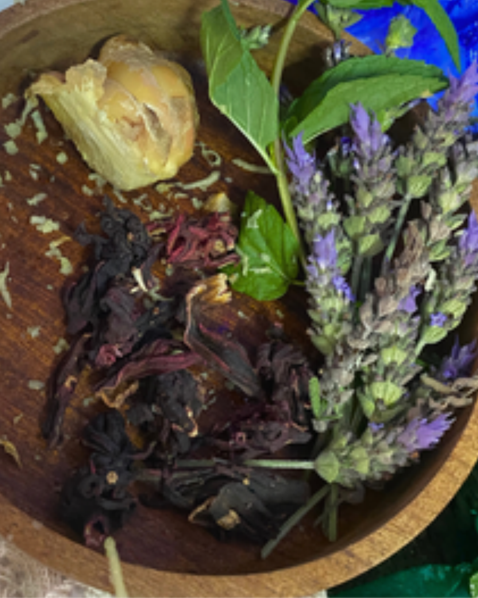
Aromas concentrados de lavanda, jengibre y tierra húmeda (petricor) que inducen la calma, regulan el bienestar y conectan con el entorno natural.
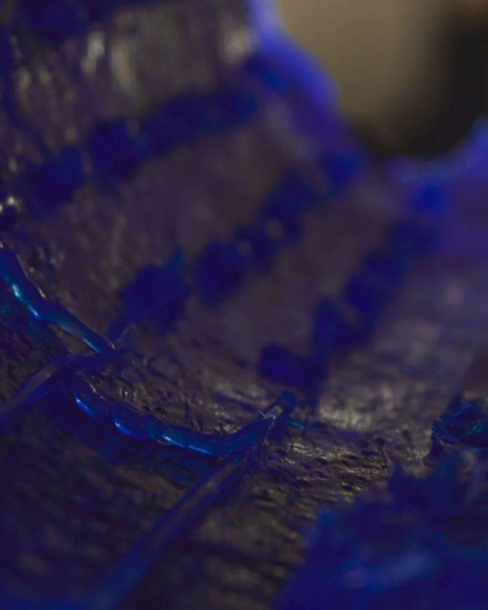
Piel sintética intervenida con puntos en relieve tipo Braille y corteza áspera, materializando los Códices emocionales que se leen al contacto.
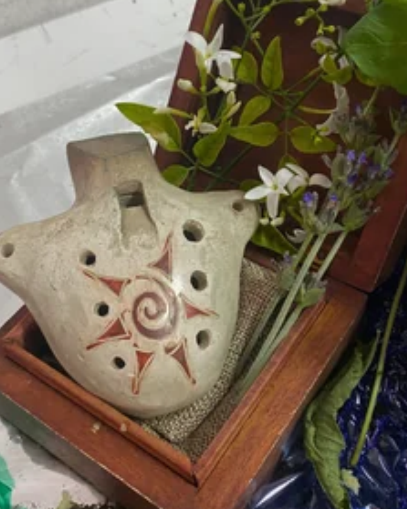
Se mezclaron los sonidos orgánicos de la cerámica y la ocarina con sonidos sintéticos y electrónicos para construir el paisaje sonoro del universo.
Escuchar sonidos ↗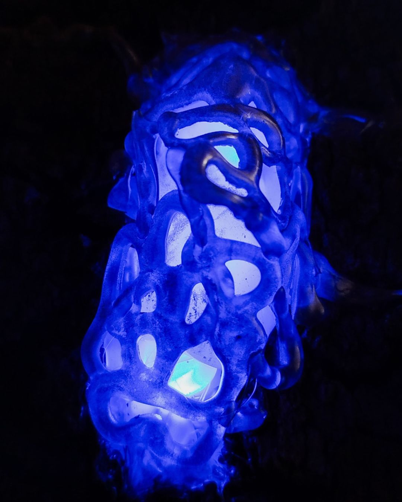
Contraste entre la oscuridad nocturna y el estallido de luces bioluminiscentes (violeta, cian y verde esmeralda) sobre cortezas y resinas translúcidas.
Conexion Somatica es un dispositivo traído del universo Connexus que materializa la empatía somática y el encuentro a través del tacto.
Intervenido con relieves orgánicos translúcidos y sensores internos, al introducir las manos y rozar las texturas de la corteza detecta el contacto humano y responde encendiendo sus vetas internas con pulsos lumínicos en azul, magenta, cian y verde, unificando el pulso al sincronizarse.


Un recorrido en etapas donde la narrativa de Connexus invadió el espacio público de La Plata, continuó en plataformas lúdicas digitales y culminó en una experiencia presencial.
Intervención urbana en Plaza Rocha, Plaza San Martín y Plaza Italia. Afiches con corteza real de árbol y un mapa críptico bajo el llamado "Connexus te necesita".
Flechas de madera pintadas en dorado guiaban el rastro dentro del Paseo del Bosque hasta un segundo tótem con el QR: "¿Querés saber cuál es tu Códice?".

Al escanear el QR, los usuarios debían superar un memotest de símbolos para desbloquear la web del universo y acceder a la coordenada secreta.
Visitar Web / Minijuego (solo para teléfono) ↗Encuentro presencial en el Paseo del Bosque donde el Lector Somático interpretaba la energía de cada visitante mediante cartas botánicas para revelar su Códice personal.
Presentada el 14 de noviembre en la Sede Central de la Facultad de Artes. La obra materializa el ritual de asimilación en el Tatum: un nido tejido con ramas y vegetación donde el visitante ingresa en busca de refugio.
Mientras el nido está vacío, el ecosistema emite un latido sonoro pausado y visuales doradas en reposo. Al sentarse, los sensores de presión detectan la presencia humana: el ritmo cardíaco se acelera, se proyectan flujos bioluminiscentes en tiempo real (TouchDesigner) en tonos violeta, cian y verde, y el participante sella su paso recibiendo su Códice tatuado en la piel.


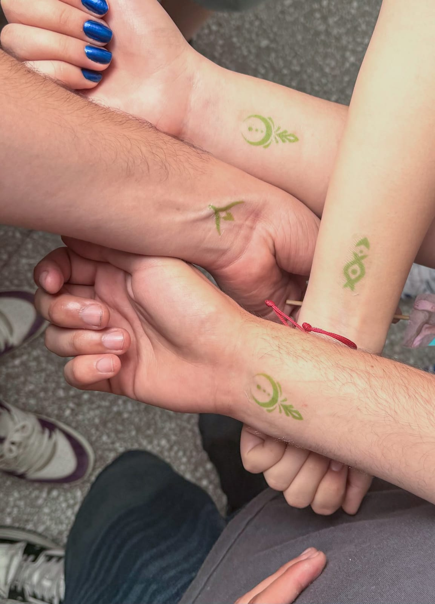
Equipo que consolidó el cierre del proyecto, la planificación transmedia y la instalación final.
Producción
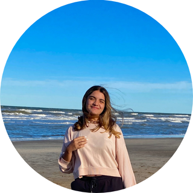
Redes y Diseño
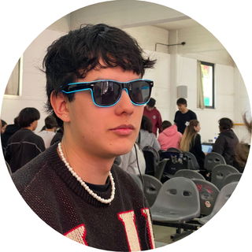
Software e Interactividad
Sonido
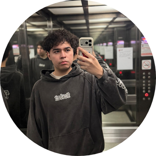
Ilustración
Hardware
Durante la etapa inicial del universo, las exploraciones multisensoriales y el dispositivo Conexion Somatica de la muestra Fragmentos también contó con la participación de Sofía Soto Quevedo (interactividad), Lilo Ortiz(materialidad) y Camila Rodil(escenografia).